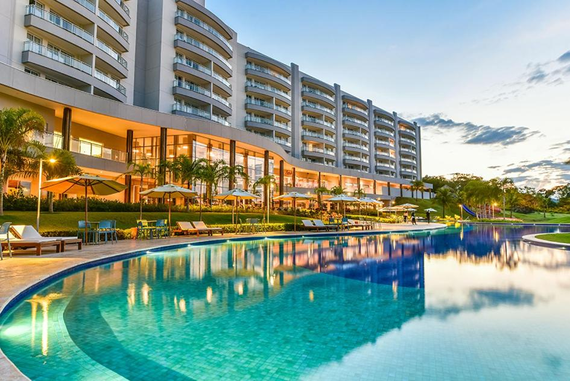

Local selecionado

Tayayá Resort
O Tayayá Resort é um dos principais destinos turísticos de Ribeirão Claro, localizado às margens
da Represa de Chavantes. O local oferece hospedagem completa, estrutura de lazer com piscinas,
trilhas, esportes aquáticos e uma vista incrível para a natureza, ideal para descanso e
aventura.
Rodovia LZ 412 Km 4, Estrada do Laranjal, Ribeirão Claro - PR, 86410-000
telefone: (43) 3378-9400
Faça sua Reserva